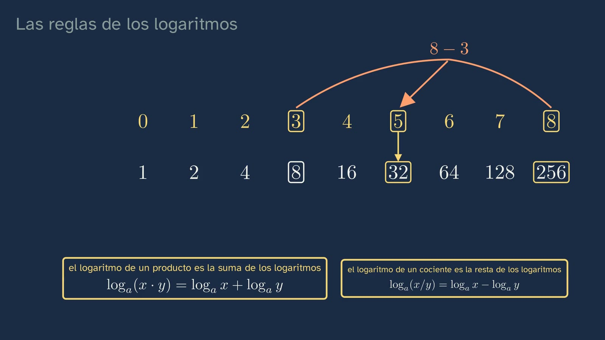
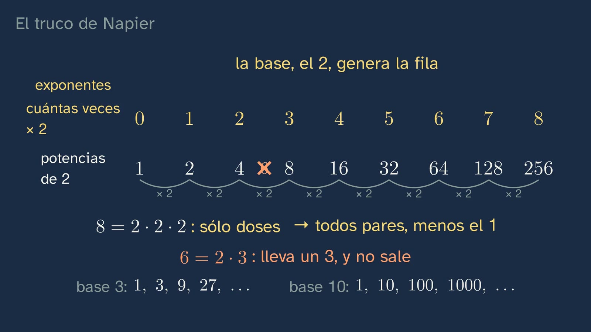

Logarithms: the power in reverse
In a nutshell
The class asks what a logarithm is and what it is for, and it starts with the mathematics. It retrieves the open interval (1, 2) from class 4 and corrects its three exercises by solving them step by step: the absolute value is removed on both sides, and the number is added to all three parts. The hook is Napier's problem (1614): multiplying huge numbers without multiplying, using only additions and subtractions. Before the rows, what a base is: the number that is multiplied by itself (2³ = 2 · 2 · 2; the exponent counts the times). 2, because it is simple, generates its row: its powers, all even except 1, and without 6, which has a factor of 3; and each base, its own. With the two rows of 2 (at the top, the exponents; below, the powers), 8 × 32 comes out by adding 3 + 5, and counting twos shows why: the rule of powers, in its box. The idea is older than Napier: in 1544, Stifel set out the same rows, the same example and, for the first time, the word "exponent". Those numbers at the top are the logarithms: log₂ 8 = 3. The definition goes in its box, in words and in symbols, as the sentence repeated throughout the class: finding the logarithm of a number in a base means finding what number you must raise the base to in order to get that number. The base is positive and different from 1, with the reason why. The trick of the rows, with its name: the product rule (with its proof: if x = aᵐ, m = logₐ x) and the quotient rule (aᵐ / aⁿ = aᵐ⁻ⁿ), each in its box, and the warning: a sum has no rule (log₂ (4 + 4) = log₂ 8 = 3, but log₂ 4 + log₂ 4 = 4). In your head, always with the same question in view: log₂ 32 = 5, any base and 10 by default, logₐ 1 = 0 and logₐ a = 1 in their box, the numbers between 0 and 1, which also have a logarithm, one with a gap (log 0.01 = −2) and one on your own (log₂ 1/8 = −3). The typical mistake, "log 0 = 0", is taken apart with the line that zooms in towards zero. To multiply any number (3 × 7) you need the logarithms of all numbers: log₂ 3 lies between 1 and 2 (with 1 it falls short; with 2 it overshoots). Tables were calculated, all in base 10, said aloud and written so that students' minds do not stay in base 2 (with them, 3 × 7 is log 3 + log 7 = log 21), and the slide rule multiplies by adding lengths (2 × 4 = 8, predicted beforehand, with each length labelled where it is). And at the end, briefly, what they are for today: sound level in decibels, β = 10 · log (I / I₀) (the 10, because the decibel is a tenth of the bel). With the class's rules, the faintest sound is at 0 dB (log 1 = 0), and one ten times more intense adds log 10 = 1: every 10 dB more, the intensity is multiplied by ten. And other sciences that use logarithms are mentioned, nothing more: pH, the brightness of the stars and the pitch of musical notes. Today's rules, on a card, and the open question: a sound ten times more intense, do you hear it ten times louder?
Objective. By the end, students will know what a logarithm is (what number you must raise the base to in order to get the number), will be able to work it out in their heads in simple cases, use the product and quotient rules, and explain what it is for: multiplying by adding, as Napier wanted, and measuring things that range from the tiny to the enormous, such as sound.
How it was remade. The class was remade with the notes of Ginés, who runs the channel. First, each rule in its box and before it is used (ADR-144). Then, meaning and applications as the thread (ADR-145), but with the mathematics first: the physics application comes at the end, when the rules are already in place, and it is deduced with them (ADR-146). What came out of the video is in "In depth", in case it is useful in class: the rock concert, Briggs, Laplace and the proof that log₂ 3 is not a fraction. With the notes on draft 13, Stifel's page and what a base is, with what it contains, came back (ADR-149); the retrieval question has no countdown (ADR-150), and the decibels stay with their formula and what the rules say about it (ADR-151).
The words. The "base" of a power: the number that is multiplied by itself; the "exponent", how many times (the word is Stifel's, 1544). "Logarithm base a of b" (logₐ b) is the exponent c with aᶜ = b; it is read "the logarithm base a of b". "log", with no base, is, in this year and on the calculator, the base-10 logarithm (the common, or decimal, logarithm); at university, many books write log for the base-e logarithm, which here is called ln and arrives in topic 12. The "intensity" of a sound: the energy that arrives each second on each square metre (W/m²). "Sound intensity level", β, in decibels; the bel, the original unit, is the plain logarithm of the ratio.
For readers outside Spain: the Bachillerato is the last two years of secondary school (ages 16–18). Mathematics I is the mathematics of the first year in the science and technology track; ESO is the compulsory secondary stage before it (ages 12–16). The video is in Spanish, with English subtitles; the images on this sheet come from the video and keep their Spanish text. In Spain the decimal separator is a comma, so the video writes 0,01 for 0.01; this sheet uses the decimal point.
Curriculum
Spain's Royal Decree 243/2022, Mathematics I, a subject of the science and technology track in the first year of Bachillerato (consolidated text in the Official State Gazette, BOE; the Mathematics annex has not changed since 2022). Our translation of the official Spanish text. The Mathematics I decree requires logarithmic functions (D.4) without having first required the logarithm, and the ESO decree (Royal Decree 217/2022) does not contain the word logaritmo, "logarithm": that is why the class builds it from scratch. Times are those of the video.
| Element | What the decree says | Where the class works on it |
|---|---|---|
| Core knowledge A.1 (A. Number sense, 1. Sense of operations) | "Strategies for operating with real numbers and vectors: mental or written calculation in simple cases and with technological tools in more complicated ones." | Logarithms in your head (9:40–12:22); the slide rule as a tool (15:33); the sound level (17:59) |
| Core knowledge D.4 (D. Algebraic sense, 4. Relations and functions) | "Properties of the different classes of functions, including polynomial, exponential, irrational, simple rational, logarithmic, trigonometric and piecewise functions: understanding and comparison." | It prepares the ground: without the logarithm there is no logarithmic function. The function, in topic 12 |
| Core knowledge F.1 (F. Socio-affective sense, 1. Beliefs, attitudes and emotions) | "Handling error, individually and collectively, as something that mobilises previously acquired knowledge and creates learning opportunities in the mathematics classroom." | The two typical mistakes: log 0 = 0 (12:46) and the logarithm of a sum (9:14) |
| Core knowledge F.3 (F. Socio-affective sense, 3. Inclusion, respect and diversity) | "Appreciating the contribution of mathematics, and the role of male and female mathematicians throughout history, to the advance of science and technology." | Napier (2:02), Stifel (5:16) and the slide rule, the tool of engineers and scientists until the seventies (17:38) |
| Criterion 2.1 | "To check the mathematical validity of the possible solutions to a problem, using reasoning and argument." | The solutions to class 4, checked by solving (1:16); 8 × 32 = 256, checked (4:08); log 0 = 0, refuted (13:00); the sum, refuted with numbers (9:14) |
| Criterion 5.1 | "To show an integrated view of mathematics, investigating and connecting different mathematical ideas." | Powers and logarithms: each rule of logarithms comes from one of the rules of powers (4:34–8:24); the interval (1, 2) from class 4, in log₂ 3 (14:54) |
| Competence 6 | The links between mathematics and other areas of knowledge | Sound level in decibels (17:59–19:09): physics, at the end and brief, deduced with the class's rules |
| Criterion 6.2 | "To analyse the contribution of mathematics to the progress of humanity, reflecting on its role in proposing solutions to complex situations and to the scientific and technological challenges that arise in society." | Logarithms as a calculating tool for more than three centuries (17:38), and as a measuring tool today (17:59) |
| Criterion 7.1 | "To represent mathematical ideas, structuring different kinds of mathematical reasoning and selecting the most suitable technologies." | The base and its row (2:31), the two rows, the slide rule, which represents logarithms as lengths (15:33), and the decibel formula (18:11) |
| Criterion 8.2 | "To recognise and use mathematical language in different contexts, communicating information with precision and rigour." | The notation logₐ b, read aloud (6:04), and the definition, in words and in symbols (6:32) |
| Criterion 9.1 | "To face situations of uncertainty, identifying and managing emotions and accepting and learning from error as part of the process of learning mathematics." | The typical mistakes and the challenges with a pause |
Specific competences 2, 5, 6, 7, 8 and 9. The class also serves Mathematics Applied to the Social Sciences I, which does require the operation: "Powers, roots and logarithms: understanding and using their relations to simplify and solve problems" (A.3 of that subject). And it connects with Physics and Chemistry: sound intensity level is part of the physics of waves.
What students bring from lower secondary (ESO) (Royal Decree 217/2022). Powers and their rules (2³ · 2⁵ = 2⁸, 2⁸ / 2³ = 2⁵), which the class recalls and justifies by counting twos; exponential notation for large and small numbers, which brings in the negative exponents of powers of ten. From the topic's earlier classes: intervals and the absolute value (class 4).
How the class is built
Video chapters
Twenty-one minutes (21:13), in twelve chapters, with one thread: the logarithm counts how many times you multiply, and that is why it turns multiplying into adding. First the mathematics, and the physics at the end. Each rule goes in its yellow box, with its words and its symbols, and is said slowly before it is used; in the detailed explanations, the voice is 10% slower. The question of the definition is in view in all the mental-calculation examples. It has two stops to think (what the descent towards zero says, 13:46; every 10 dB, × 10, deduced, 19:09). Ximena appears on camera four times, about twenty seconds in all: to say hello (0:00), with the hook (1:51), halfway through (14:11) and to say goodbye (21:07).
| Chapter | What happens | Why this way |
|---|---|---|
| What we'll see (0:00) | Ximena says hello. The map of the topic's six classes, with the fifth highlighted, and the question: "What is a logarithm, and what is it for?". | Topic 1 keeps its numbered map. |
| What you already know (0:15) | How do you write the numbers greater than 1 and less than 2? A short silence, with no countdown. The open interval (1, 2), with the question in view (0:28). | Retrieval before hearing the answer; no countdown, because it is revision (ADR-150). |
| Solutions to the previous class (0:36) | |x − 2| ≤ 0.5 → −0.5 ≤ x − 2 ≤ 0.5 → 1.5 ≤ x ≤ 2.5, with √2 outside and √5 inside; [−1, 3] is |x − 1| ≤ 2, checked by solving (1:16); |x − 1| > 2 → x − 1 > 2 or x − 1 < −2 → (−∞, −1) ∪ (3, +∞) (1:20). | Each one with its question in view and solved line by line, as the student would do it (ADR-147); brief: the board writes each step and the voice names it, and after two minutes today's content begins (ADR-148). |
| Napier's trick (1:51) | The hook: how do you multiply without multiplying? Napier's book and its promise (2:02). What a base is: 2³ = 2 · 2 · 2 (2:31). 2, because it is simple, generates its row: its powers, even except 1 and without 6; each base, its own (3:22). The challenge, 8 × 32. Pause (3:53). The arcs of 3 and 5 meet at 8, and below, 256 (4:08). Counting twos, the rule of powers in its box (4:34). The same idea in Stifel, 1544, with the word "exponent" (5:16). | The problem before the theory (article 15), and a mathematical one: the class is a maths class (ADR-146). Each word, with what it contains, before it is used, and the history that gives it a foundation (ADR-149). |
| What is a logarithm? (6:04) | The numbers at the top are the logarithms: log₂ 8 = 3, with the notation read aloud. The definition, in its box, as the sentence that is repeated, and in symbols (6:32). The base, positive and different from 1, with the reason why (7:05). | From the concrete to the rule, and the rule before the examples (ADR-144). The sentence, so that it sticks (ADR-145). |
| The rules: multiplying by adding (7:30) | The trick, with its name: the product rule, with its proof. The quotient rule, with aᵐ / aⁿ = aᵐ⁻ⁿ, on the same rows (8:24). A sum has no rule (9:14). | Each rule of logarithms comes from one of the rules of powers, and it is stated before it is used. The second typical mistake, in view. |
| Logarithms in your head (9:40) | With the question in view: log₂ 32 = 5. Any base; the most used, 10, with the log key; log 100 = 2; log 1 = 0 (10:10); logₐ 1 = 0 and logₐ a = 1, in their box (10:40). Numbers between 0 and 1 also have a logarithm: to the right, × 10 and + 1; to the left, the opposite (11:09). One with a gap: 10^○ = 0.01 (11:37–11:49). One without help: log₂ 1/8. Pause (12:09). | A worked example, another with a gap and another on their own (article 14: examples that are gradually withdrawn), each with the same question. |
| The mistake: the logarithm of zero (12:46) | If log 1 = 0, is log 0 = 0 too? Pause. 10⁰ = 1; to the left, the number approaches 0 without reaching it (13:00), with the line zooming in at each step and its marks (0.5, 0.05…), which are renewed as it zooms. To think about (13:46). Ximena halfway through (14:11). | The mistake is made plausible by tying it to log 1 = 0 (Muller et al., 2008). |
| Any number (14:23) | The rows only multiply the numbers they contain: for 3 × 7 you need the logarithms of all numbers. log₂ 3, with the usual question: with 1 it falls short, with 2 it overshoots; it is in (1, 2) (14:54). | It answers why you need to go beyond the rows: what Napier promised was to multiply any number. |
| The slide rule (15:33) | The tables, calculated by hand: 3 × 7 with log 3 + log 7 = log 21. Logarithms as lengths: log 2 ≈ 0.3, log 4 = log 2 + log 2, log 8 ≈ 3 · 0.3. "Careful: here, base 10", in view until the end of the slide rule section. Two rules; what is left under the 4? Pause (16:42). 8, with each length labelled where it is: the green one starts where the yellow one ends, and together they reach 8 (16:57). A real slide rule, and in its photo the middle piece slides until its 1 sits over the 2 (17:38). | It answers a student's prediction (article 17.3): multiplying is adding lengths. |
| What they're for today: sound (17:59) | β = 10 · log (I / I₀), with each letter said aloud and the reason for the 10. With today's rules: the faintest, at 0 dB, because log 1 = 0 (18:36); ten times more intense adds log 10 = 1, by the product rule: every 10 dB, × 10, and with 20, × 100 (19:09). Other sciences, only mentioned: pH, the brightness of the stars and the pitch of notes (19:18). | The physics application, after the rules and deduced with them (ADR-146), and brief: the foundation and one example (ADR-151). |
| Practice and keep thinking (19:35) | Today's rules, on a card. Three exercises (20:08). The open question, with its pause (20:37). Class 6 (20:58) and the goodbye (21:07). | The solutions open the next class. |
Bridges with other subjects. Physics and Chemistry: sound intensity level (decibels) and, with the same idea, pH. History: calculation before machines.





A plan for a 50-minute lesson
Designed for watching the video in class, in sections, with the student worksheet.
| Minutes | What to do |
|---|---|
| 0–5 | No video, in pairs: "Before watching the video", on the worksheet. |
| 5–12 | Video up to 6:04 (the solutions, Napier, the base, the rows and Stifel). At the challenge of the rows (3:53), one minute in pairs. |
| 12–20 | Video up to 9:40. Stop after the definition box (6:32) to copy the sentence onto the worksheet, and after the boxes with the rules (8:24). |
| 20–27 | Video up to 14:23: in your head, with the gaps (11:37 and 12:09), and the mistake. |
| 27–33 | Video to the end. |
| 33–45 | The paper slide rule activity or the decibels activity (below), or the exercises on the worksheet. |
| 45–50 | Whole-class discussion of the open question. |
Typical mistakes and how they are handled
- "The logarithm of 0 is 0." It is the class's mistake (12:46). It is taken apart with the definition: you would need 10^c = 0, and 10⁰ = 1. To the left, each step divides by ten, and a positive number divided by ten is still positive: it approaches 0 without reaching it.
- "log (x + y) = log x + log y." The class's other mistake (9:14), with the rows of 2: log₂ (4 + 4) = log₂ 8 = 3, but log₂ 4 + log₂ 4 = 2 + 2 = 4. With the calculator, in base 10: log (10 + 10) = log 20 ≈ 1.30, not 2. The rule is for products, not for sums. A question that helps: "which operation turns into a sum?".
- "From 60 to 120 dB, double." It is the mistake of reading a logarithmic scale as if it added. Every 10 dB multiplies the intensity by ten (19:09): from 60 to 120, by 10⁶.
- Miscounting the times. log₂ 32 = 4, from starting to count at 2 instead of at 1. That is why the class says "start at 1" (9:40).
- Reading the notation backwards: "log₂ 8" as "the logarithm of 2 in base 8". The base goes small and low, and it is the one that is raised (6:04).
- "The logarithm of a negative number is negative." It does not exist: a power with a positive base is always positive (13:46). Negative numbers do come out as logarithms, of the numbers between 0 and 1 (log 0.01 = −2).
Questions and solutions
Stop and think (in the video)
- How do you write the numbers greater than 1 and less than 2? (0:15, with no countdown) With the open interval (1, 2): neither 1 nor 2 is in it.
- Multiply 8 by 32 without multiplying, using the two rows. (3:53) Above 8 there is a 3 and above 32 a 5; 3 + 5 = 8, and below 8 is 256.
- What number must you raise 10 to in order to get 0.01? (11:37) To −2: 0.01 = 1/100 = 1 ÷ 10 ÷ 10, two steps to the left of 1.
- What is log₂ (1/8)? (12:09) −3: 1/8 = 1/2³ = 2⁻³.
- Some people say that log 0 = 0. What is wrong? (12:46) See mistake 1.
- Which number will be left below the 4 on top? (16:42) 8: the top rule, slid by log 2, adds log 2 + log 4 = log 8.
The two stops to think
- What the descent towards zero says (13:46). With bases greater than 1, like 2 or 10, the closer a number is to 0, the more negative its logarithm, without end; and there is no logarithm of a negative number.
- Every 10 dB, × 10 (19:09). Ten times more intense means multiplying I / I₀ by 10, and by the product rule its logarithm adds log 10 = 1; with the 10 in front, 10 dB more. That is why a scale that adds (decibels) measures something that multiplies (intensity). To compare any two sounds, the quotient rule gives β₂ − β₁ = 10 · log (I₂ / I₁) (for the classroom; the video does not go that far). The same idea in pH: each unit, ten times more or less acidity.
Practice (the solutions open class 6)
- log₃ 81. 4: 3 · 3 · 3 · 3 = 81, counting from 1. What will come up: 3 (from starting to count at 3); 27 (81 ÷ 3).
- One sound at 80 dB and another at 50 dB: how many times more intense is the first? A thousand times: 80 − 50 = 30 dB, three jumps of 10 dB, and each one multiplies by ten: 10 · 10 · 10 = 1000 (with the formula, 30 = 10 · log (I₁ / I₂), log (I₁ / I₂) = 3 and I₁ / I₂ = 10³). The video does the 20 dB one (× 100); this one asks for one more jump. What will come up: 30 (subtracting the decibels and stopping there); 3 (forgetting to undo the logarithm); 300 (adding ten three times instead of multiplying).
- Between which two whole numbers is log₂ 10? Write it as an interval. Between 3 and 4, because 2³ = 8 < 10 < 16 = 2⁴: the open interval (3, 4). With the calculator (class 6), 3.3219… Marking criteria: the interval correctly written (class 4) and the reason, with the powers of 2: with 3 it falls short, with 4 it overshoots.
From the student worksheet
- Before watching the video. Eight times to reach 256. 2³ · 2⁵ = 2⁸ (eight twos) and 2⁸ ÷ 2³ = 2⁵ (three twos are removed). |x − 3| ≤ 1 → −1 ≤ x − 3 ≤ 1 → 2 ≤ x ≤ 4.
- The logarithm, with gaps. log₃ 9 = 2 (1 → 3 → 9, twice); log₃ (1/9) = −2; log₅ 1 = 0, without calculating.
- One more, with the rules. log 4 ≈ 0.60; log 8 ≈ 0.90; log 5 = log 10 − log 2 ≈ 0.70 (quotient rule); log 20 = log 2 + log 10 ≈ 1.30. To four decimal places: 0.6021, 0.9031, 0.6990 and 1.3010.
- One more, with sound. 95 − 85 = 10 dB: ten times. 105 − 75 = 30 dB: a thousand times.
- The challenge. log 1024 is the sum of ten log 2 (by the product rule), and 1024 ≈ 1000, so 10 · log 2 ≈ 3 and log 2 ≈ 0.3 (in fact, 0.30103).
Keep thinking. A sound ten times more intense: do you hear it ten times louder? The class leaves it open. For the debate: no. With 10 dB more, the loudness we perceive roughly doubles (Stevens's sone scale); it is not multiplied by ten. That "the ear works with logarithms" (the Weber–Fechner law) is a disputed approximation: if it comes up, it should be presented as such. A question for anyone who wants more: why do you think the ear does not perceive intensity as it is? If someone measures the board: the wave ten times more intense is drawn about three times taller, not ten, because intensity goes with the square of the amplitude (√10 ≈ 3.16).
In depth
What came out of the video, in case it is useful in class. From the faintest sound you can hear (10⁻¹² W/m², 0 dB) to that of a very loud rock concert (1 W/m², 120 dB) there is a factor of a trillion, and the scale leaves it at 120. Henry Briggs published in 1624 the common logarithms of thirty thousand numbers, to fourteen decimal places, calculated by hand. Laplace wrote that logarithms, by reducing to a few days the work of several months, "double, so to speak, the life of astronomers" (Exposition du système du monde, 1798; our translation). And log₂ 3 is not a fraction: if it were p/q, by the product rule the logarithm of 3^q would be p, so 3^q = 2^p, and that is impossible because factorisation into primes is unique (and, more simply still, one is odd and the other even). With this the topic's thread closes: logarithms need the real numbers.
How Napier built his table. Napier did not tabulate the powers of a base, but the logarithms of sines, for trigonometry and astronomy. In today's notation, his logarithm of x is, very approximately, 10⁷ · ln(10⁷ / x). That is why MacTutor says that his logarithms "are not really to any base", and it is a mistake to say that Napierian logarithms (those to base e) are Napier's. His preface promises to do it all "per solas additiones, substractiones, bipartitiones, & tripartitiones": with additions, subtractions and divisions by two and by three, which are the ones that square and cube roots need.
log 2 ≈ 0.3, in your head. 2¹⁰ = 1024 is almost 1000 = 10³. By the product rule, log 1024 is the sum of ten log 2, so 10 · log 2 ≈ 3 and log 2 ≈ 0.3. It is the challenge on the student worksheet, and a good way into the paper slide rule.
The slide rule, with its names. Edmund Gunter drew the logarithmic scale on a rule in 1620; William Oughtred put two rules together so that they slide, and described them in 1632. There was a priority dispute with Richard Delamain (MacTutor, biography of Oughtred). The voice only says "a few years later, in England".
The decibel, with more physics. β = 10 · log (I / I₀), with I₀ = 10⁻¹² W/m², the threshold of hearing at 1000 Hz. The bel, the original unit (log (I / I₀) on its own, named in honour of Alexander Graham Bell), turned out to be too large; the decibel is a tenth of it (ITU-R, Recommendation V.574). Sound level meters measure in dB(A), with a weighting that imitates the ear's sensitivity to each frequency; the class does not go into that. Nor into health: if it comes up in class, the WHO (Make Listening Safe, 2015) says that 100 dB is only safe for about 15 minutes a day.
Two classroom activities
The paper slide rule (about 25 minutes, in pairs; it works on criterion 7.1 and mental calculation). Each pair cuts out two strips of card about 12 cm long and marks on both, with a ruler, the numbers at these distances from the start (10 cm per unit of logarithm):
| Number | 1 | 2 | 3 | 4 | 5 | 6 | 7 | 8 | 9 | 10 |
|---|---|---|---|---|---|---|---|---|---|---|
| Distance (cm) | 0 | 3.0 | 4.8 | 6.0 | 7.0 | 7.8 | 8.5 | 9.0 | 9.5 | 10 |
- Before marking: why does 2 go at 3.0 and 4 at 6.0? (log 4 = 2 · log 2.) And why does 5 go at 7.0? (5 = 10 / 2: quotient rule.)
- Multiply with the strips 2 × 3, 2 × 4 and 3 × 3. Does it match what you know?
- How would you divide with the two strips? (By subtracting lengths: 8 ÷ 2.)
The distances, rounded to millimetres, come from log 2 = 0.301, log 3 = 0.477, log 4 = 0.602, log 5 = 0.699, log 6 = 0.778, log 7 = 0.845, log 8 = 0.903 and log 9 = 0.954 (checked with Python).
The classroom's decibels (about 15 minutes). With a sound level meter app on a mobile phone (any free one; the measurement is approximate), each pair measures the classroom in silence, a conversation and a round of applause. Then: how many times more intense is the applause than the silence? (Subtract the decibels, divide by ten and raise ten to that number.) How many decibels do you have to go up for the intensity to be multiplied by a thousand?
Open resources
| Resource | What it is | What for |
|---|---|---|
| OpenStax, College Physics, 17.3 | Sound intensity level, with its table of examples (in English, open licence) | The class's physics, with more examples |
| Napier, Mirifici logarithmorum canonis descriptio (1614) (Internet Archive) | Napier's book, with its preface in Latin and its tables of sines | Seeing what a table of logarithms was really like |
| Stifel, Arithmetica integra (1544) (SLUB Dresden) | The whole book, scanned; the two rows, on folio 237 (image 489) | The original source of the trick of the rows |
| MacTutor (University of St Andrews) | Biographies of Napier, Stifel, Briggs, Bürgi and Oughtred, in English | The history, with its sources |
| Slide rule collection (Smithsonian) | More than two hundred slide rules, with their records, in English | Seeing the variety of slide rules and when they were used |
What the class leaves out, and why
The class has one question, what a logarithm is and what it is for, and whatever does not answer it is left out.
- The power rule and change of base: class 6, with the calculator, and with applications that solve for the exponent (how many folds of paper to reach the Moon). The product and quotient rules are given here.
- The number e and the natural logarithm (ln): topic 12, "The families of functions", with the exponential function.
- The logarithmic function and its graph: topic 12 (core knowledge D.4).
- What an exponent that is not a whole number means (2^1.58…): it starts in topic 2, with roots (a^(1/n) is the nth root of a); irrational exponents, with limits.
Sources
- Royal Decree 243/2022, annex II, Mathematics, consolidated text (BOE, in Spanish): https://www.boe.es/buscar/act.php?id=BOE-A-2022-5521. Lower secondary (ESO): Royal Decree 217/2022 (BOE, in Spanish): https://www.boe.es/buscar/act.php?id=BOE-A-2022-4975.
- J. Napier, Mirifici logarithmorum canonis descriptio (Edinburgh, Andrew Hart, 1614), "Praefatio", read in Latin in the Internet Archive copy and checked against E. Wright's English translation (1616). The translation into Spanish is the channel's.
- OpenStax, College Physics, section 17.3, "Sound Intensity and Sound Level": intensity, power per unit area; β = 10 · log (I / I₀), I₀ = 10⁻¹² W/m²; 60 dB, a normal conversation; 120 dB (1 W/m²), a very loud rock concert, the threshold of pain.
- ITU-R, Recommendation V.574-5 (2015): the bel, the common logarithm of a ratio of powers, and the decibel, a tenth of it. World Health Organization, Make Listening Safe (2015), only for "In depth".
- The slide rule: MacTutor, biography of Oughtred; Smithsonian, National Museum of American History, slide rule collection.
- Muller, D. A., Sharma, M. D. and Reimann, P. (2008). Raising cognitive load with linear multimedia to promote conceptual change. Science Education, 92(2), 278–296.
- Every calculation on this sheet has been checked by running it with Python (
verificacion-datos.md, sections 8, 10, 11 and 12).
About this class
GinCol Lab is a free science channel for curious minds. Ximena is an illustrated character, not a real person, and her voice is synthetic: computer-generated with Microsoft Azure AI Speech and not imitating any known person. The board is animated with Manim. The script and this sheet are written by an AI (Claude, by Anthropic) and reviewed by a person before publishing. Every fact has been checked in two sources or in the original, every quotation in its source and every calculation by running it. The title page of Napier's book and Stifel's page are in the public domain, and the photo of the slide rule is by Slashme (CC0). The images on this sheet come from the board of the video itself. This English version was translated by the same AI. If you spot a mistake, tell us: learning also means correcting.
This sheet is published under a Creative Commons Attribution 4.0 licence: you can copy it, adapt it and use it in your classroom, crediting GinCol Lab.
How to cite this sheet
GinCol Lab (2026). Logarithms: the power in reverse. GinCol Lab teacher sheet: Mathematics I · 1st year of Bachillerato · The real numbers · Class 5 of 6. https://gincollab.github.io/aula/en/matematicas-i/t01-c5/. CC BY 4.0.
GinCol Lab teacher sheet · CC BY 4.0 · Source and errata